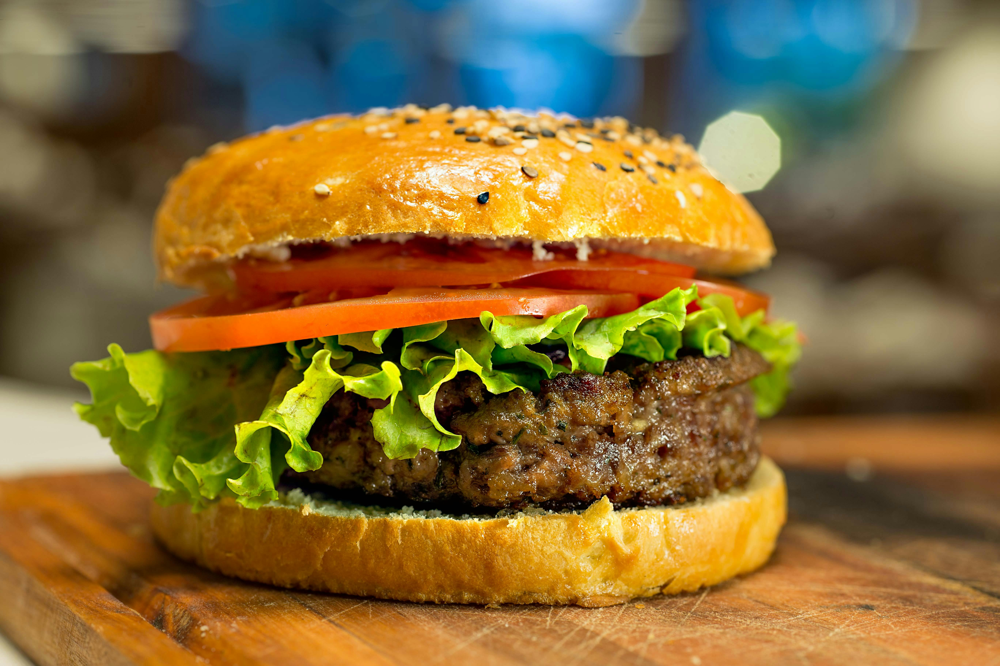

Home
Hamburgers

Description
Classic homemade hamburgers.
Ingredients
- 1 lb. Ground Beef
- Sliced Cheese of Preference
- 3-4 Buns
- 1 Tomato
- 1 Head of Lettuce
- 1 Onion
- Steak Seasoning
Steps
- Start up the grill, and allow it to heat up while completing steps 2 and 3.
- Form 1 lb. of ground beef into 3-4 patties.
- Season both sides of the patties with steak seasoning.
- Place the patties on the grill and cook each side for 4 minutes on medium heat.
- While the burgers are cooking, slice your tomato and onion.
- When the burgers look like they are about done, add a slice of cheese per patty.
- Remove from heat once cheese has melted.
- Place each patty on a bun.
- Add lettuce, tomato, onion, and your choice of condiments onto the burger.
- Enjoy!